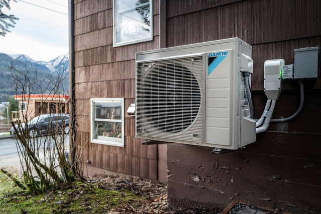
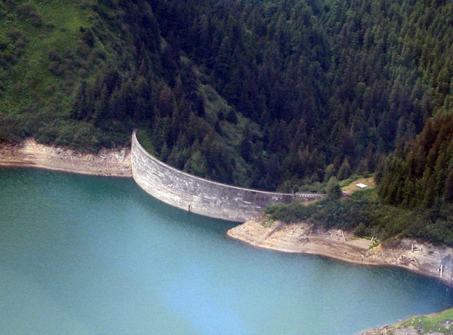
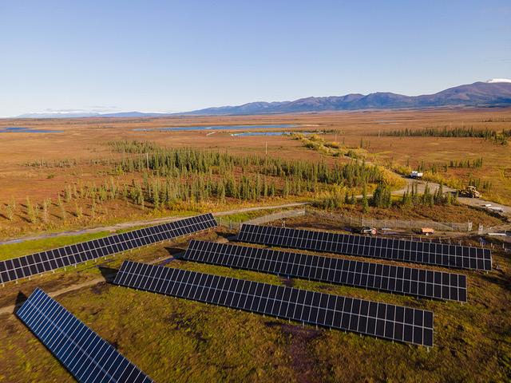

Alaska Energy Infrastructure
Alaska Energy Infrastructure (AEI) Project is a bold initiative to bring sustainable, community-driven energy solutions to Alaska, including remote regions. Guided by Indigenous insight and real-time collaboration, AEI will deliver actionable policy to the 2026 legislative session.

“Heat pump system outside a home in Juneau, Alaska” Earth Justice 11/21/2023 by Michael Penn

”Salmon Creek Dam Alaska” Salmon Creek Dam, Wikipedia

“Solar PV specially designed to catch rays north of the Arctic Circle” Homer Microgrid News Shugnak, Alaska 10/12/2022 FRANCKLYN by Blue Planet Energy